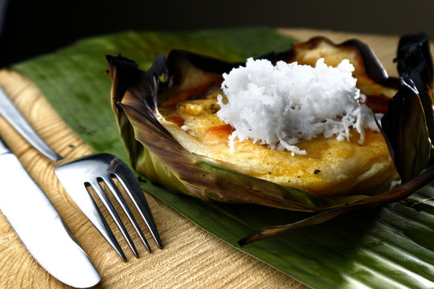

Bibingka
Bibingka is like the warm hug of Filipino desserts! It's a soft, fluffy rice cake baked in banana leaves, giving it a cozy, smoky aroma. Topped with salted egg, butter, and coconut, it's a sweet-savory treat that feels like Christmas morning, no matter the season. Perfect with coffee or tsokolate, bibingka is the ultimate comfort food that makes you say, *"Isa pa, please!"*

Ingredients:
For the Batter:
- 1 cup rice flour
- 1 cup all-purpose flour
- 1 tbsp baking powder
- 1/4 tsp salt
- 1/2 cup sugar
- 2 large eggs
- 1 1/4 cups coconut milk
- 1/4 cup water
- 1/4 cup melted butter
For the Toppings:
- Salted egg (itlog na maalat), sliced
- Grated cheese
- Grated fresh coconut (optional)
- Melted butter (for brushing)
For the Pan:
- Banana leaves, softened (optional)
- Butter or margarine (for greasing)
Recipe:
- Prepare the Banana Leaves (Optional):
- Soften banana leaves by passing them over a flame or heating in a pan.
- Line your pan or ramekins with banana leaves and grease with butter.
- Make the Batter
- Mix rice flour, all-purpose flour, baking powder, salt, and sugar in a bowl.
- In another bowl, whisk eggs, coconut milk, water, and melted butter.
- Combine wet and dry ingredients until smooth.
- Assemble
- Pour batter into the pan or ramekins (fill 2/3 full).
- Add salted egg slices and grated cheese on top.
- Bake
- Preheat oven to 375°F (190°C).
- Bake for 15–20 minutes or until a toothpick comes out clean.
- Finish and Serve
- Brush the bibingka with melted butter.
- Sprinkle with grated coconut if desired.
- Serve warm and enjoy!
Perfect for holidays, merienda, or whenever you crave a warm, comforting Filipino treat!